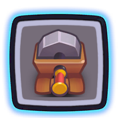
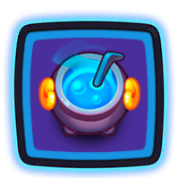
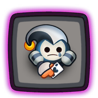
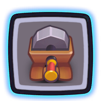
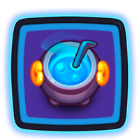
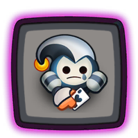
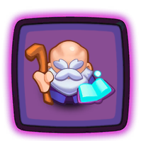
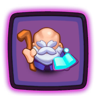
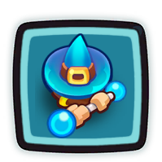
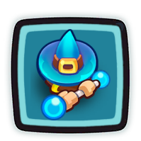

Non-legendary teams
Even if you don't have many(or any) legendary cards yet, you can still play Rush Royale Co-op and have lots of fun.
Here are a few teams that don't require legendary cards to work:
Zealot teams

Zealot puts out high damage but is slow compared to other units and is pretty weak unless he is next to a Grindstone(critical chance buff).
Cauldron produces mana to upgrade your units as quickly as possible.
Mime can merge with unwanted units and make sure you don't get stuck.
Here are a few Zealot teams that are good for gold farming since you can consistently carry/solo to wave 60:
1. Bombardier is a good option to counter boss abilities that may disrupt your unit positioning.
 







 3. Portal Keeper helps you set up an optimal position since he can switch places with another unit of the same tier.

3. Portal Keeper helps you set up an optimal position since he can switch places with another unit of the same tier.

Crystalmancer teams

Crystalmancer specializes in killing bosses but has trouble dealing with higher level waves of mobs.
Crystalmancer does more damage when more copies of him are on the board so it's a good idea to spam him.
1. Executioner finishes off bosses and other mobs when they have low health. Cold Mage slows the enemies advance. The absence of Mime makes this team prone to get stuck(no possible merges) like we see in the screenshot:
 

Support teams
You can support your teammate without having Shaman, Clock or other legendaries.
You can help by slowing, debuffing and/or executing the monsters.
1. Chemist debuffs the bosses and mobs while Executioner finishes them off when they have low health. Cold Mage slows the enemies advance. Mime can remove unwanted units and make sure you don't get stuck.